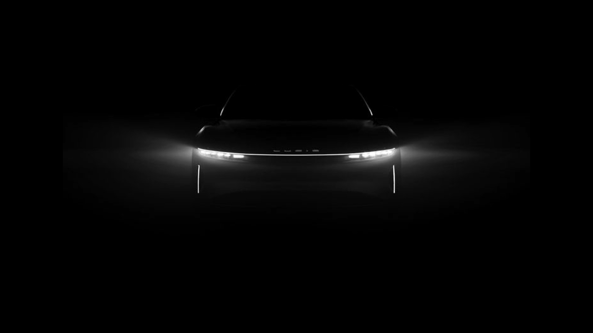
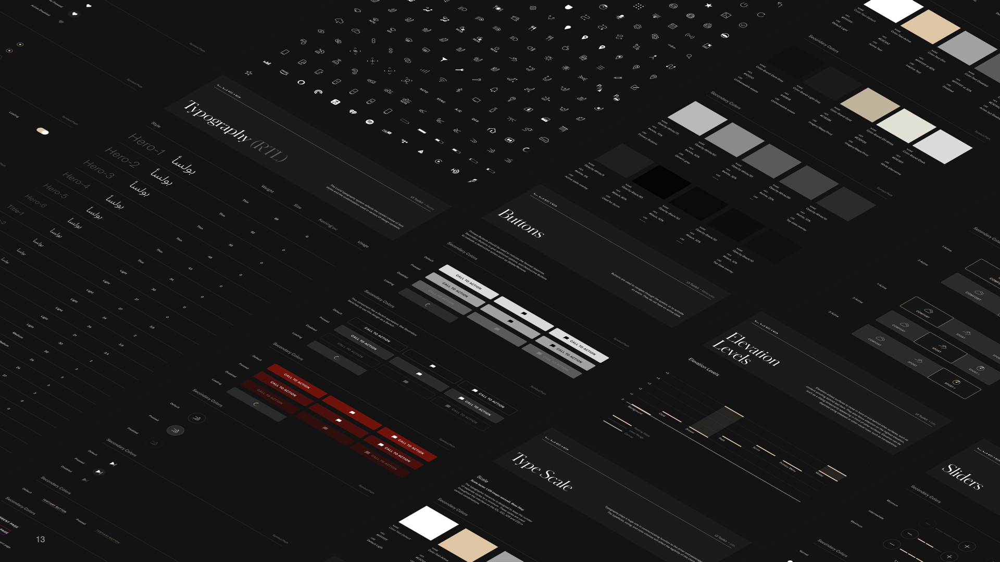

01 / Define
Find the shared decisions.
Audit recurring choices across teams and turn product gaps into system priorities.
A shared system for the vehicle, the app, and the teams behind them.
System strategy · Visual foundations
Components · Governance

Overview
Lucid teams were designing across vehicle controls, mobile surfaces, and product workflows. I turned repeated, local decisions into shared foundations, components, and guidance—giving teams a consistent language to build with.
The challenge
Feature teams created styles and components independently. Development was ticket-driven, and even simple behaviors required frequent alignment. The opportunity was to make those decisions reusable, explicit, and easier to trust.
System strategy
I treated the system as a product. That meant defining its foundations and the day-to-day practices that would help teams adopt, review, and maintain them.
01 / Define
Audit recurring choices across teams and turn product gaps into system priorities.
02 / Design
Define foundations, components, and interaction patterns around real product needs.
03 / Align
Bring design, implementation, and stakeholder reviews into the delivery process.
04 / Maintain
Use documentation, versioning, and feedback to support adoption over time.

Foundations
I translated Lucid’s visual language into reusable styles, tokens, and usage guidance. Each foundation connected the look of the interface to how teams applied it across displays and contexts.
Reusable themes with values and usage rules for menus, drawers, cards, and modals.
A shared hierarchy, with type styles, spacing, and guidance for consistent information structure.
Standardized symbols for vehicle controls, navigation, media, and system states.
Layout rules mapped to the instrument cluster, center display, pilot panel, and rear console.
The shared library brought foundations, components, and developer handoff into one place. The style library also covered imagery, motion, hardware controls, and localization.
Components
A reusable component needs more than a visual. I documented states, measurements, directionality, validation, and overflow so design and engineering could work from the same decisions.
Parent components defined shared behavior. Child components handled shape, icon, label, and selection variants.
Callouts connected measurements and token references to validation, spacing, direction, and overflow.
English and Arabic variants shared system logic, with LTR and RTL behavior specified side by side.
Governance
I made maintenance visible through changelogs, toolkit updates, and review rituals. Teams could understand what changed, why it changed, and how to adopt it.
Core team alignment on quality, patterns, and technical decisions.
Implementation evaluation with feature developers.
Cross-functional alignment on direction and strategy.
Impact
Shared foundations, clearer ownership, and regular feedback helped the system become part of everyday product work.
25%–70%
Increased coverage by turning repeated product decisions into reusable foundations and components.
80%
Clearer ownership and review rhythms made system decisions easier to evaluate.
$2M
Reduced repeated design and implementation effort across product surfaces.
*Estimated efficiency savings, rather than a verified financial result.
What I took forward
The Lucid work shaped how I connect craft, governance, and delivery. Clear ownership, adoption paths, and visible maintenance are what turn a library into a product teams rely on.